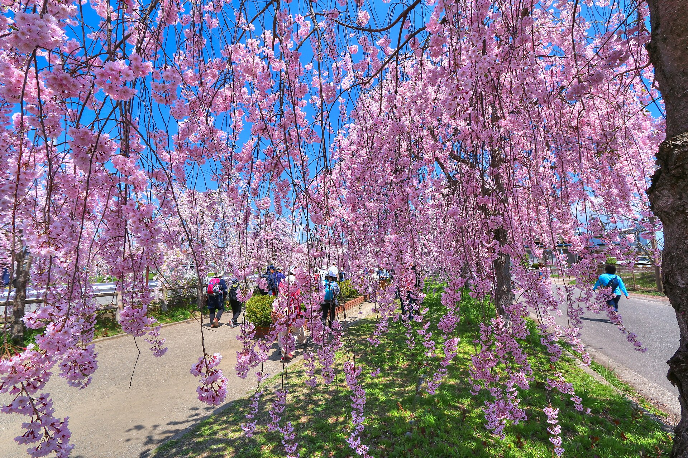
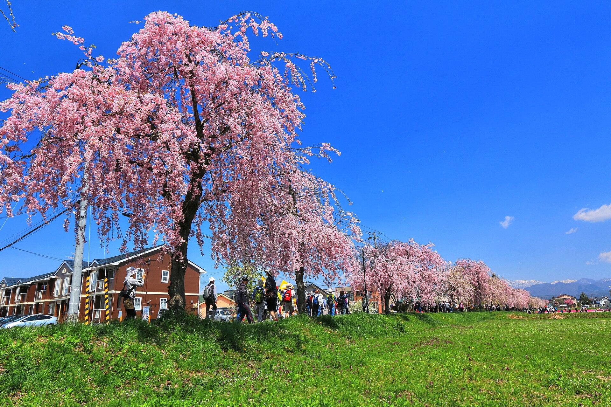
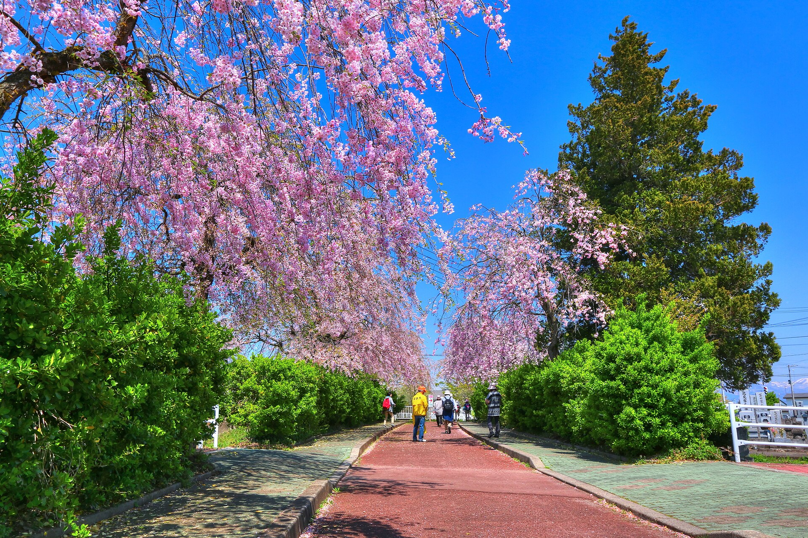
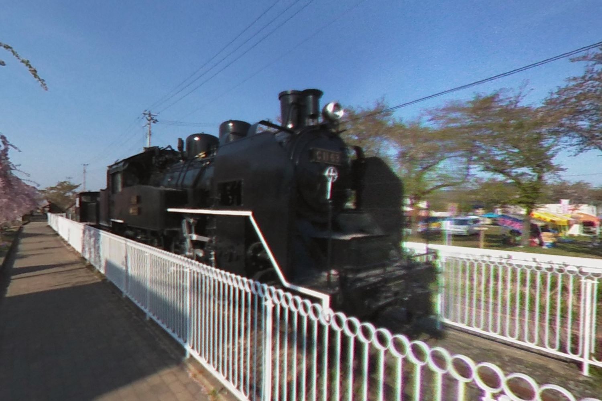
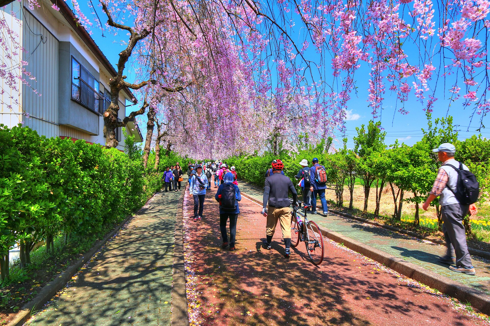
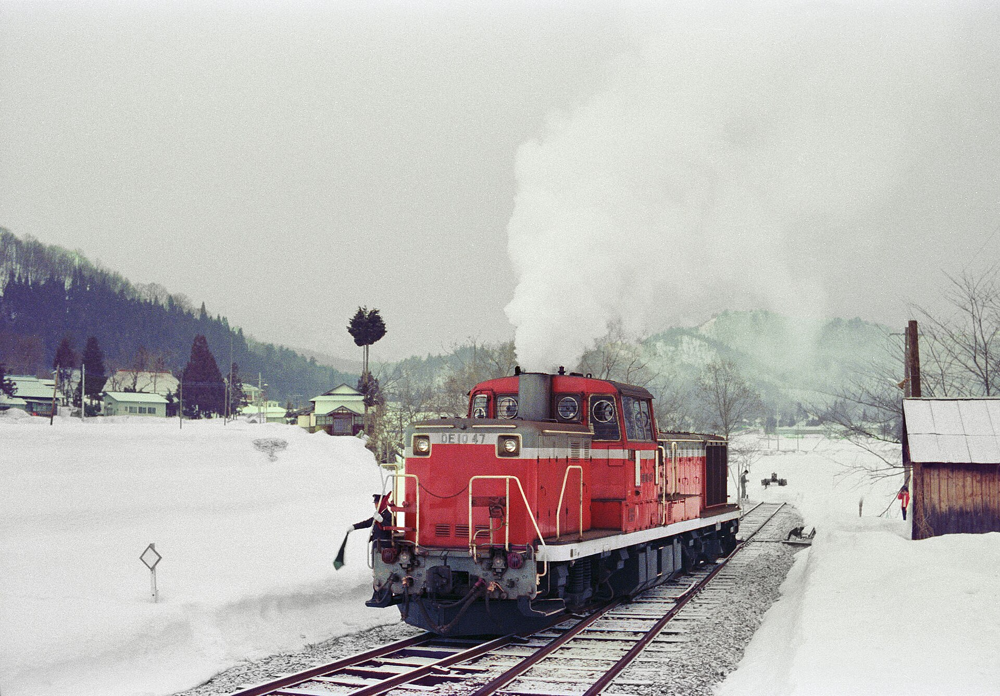
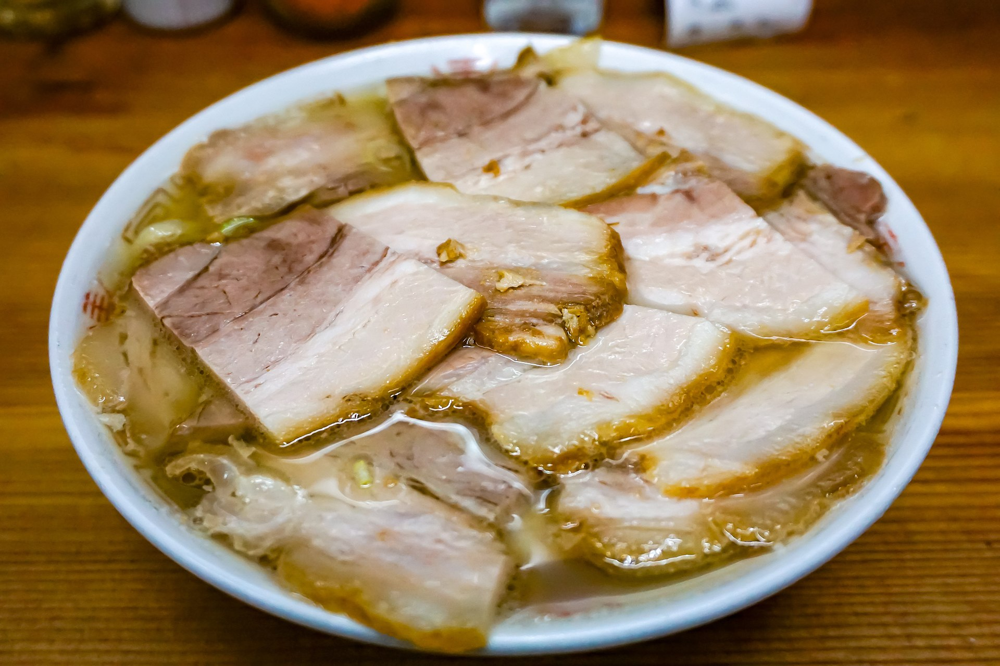
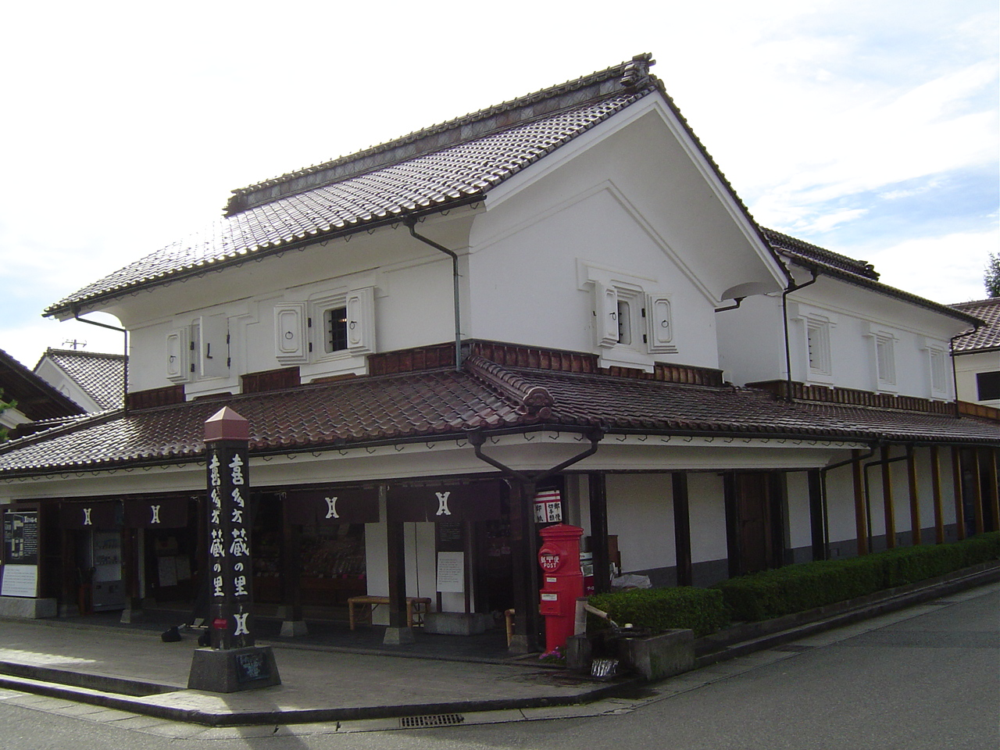

駅から徒歩 約5分
喜多方駅・南側入口
初めてならここから。駅で帰りの列車時刻を確認し、飲み物を用意して出発します。

写真：日中線記念自転車歩行者道／撮影 くろふね
日中線、桜の道
喜多方駅から西へ歩いて約5分。かつて喜多方と熱塩を結んだ旧国鉄日中線の一部は、今では市民の生活道路であり、春を待つ人々の散歩道です。
しだれ桜の枝をくぐり、黒いSLと出会い、さらに北へ。にぎわいから静けさへ変わる約3kmを、自分の時間に合わせて歩けます。
鉄道から花道への物語

桜並木の歩き方
南側入口から北へ進むほど、街の桜道から静かな花のトンネルへ。往復時間を考えて折り返し地点を決めましょう。
※ 位置・距離は散策計画の目安です。現地案内に従ってください。
駅から徒歩 約5分
初めてならここから。駅で帰りの列車時刻を確認し、飲み物を用意して出発します。
南側の市街地区間
住宅地を通る穏やかな区間。生活道路のため、道をふさがず静かに歩きましょう。
人気の見どころ
黒いC11形蒸気機関車と桜の対比が美しい地点。混雑時は譲り合って短時間で撮影を。
北へもうひと歩き
枝が降り注ぐように重なる並木の核心部。最後まで歩く場合は帰路の時間と体力を残して。
滞在時間から選ぶ
ボタンを選ぶと、おすすめの回り方を表示します。
南側入口 → SL広場 → 桜のトンネル → 北側の静かな区間 → 市街地へ戻る
二つの象徴
日中線の記憶を残すSLと、道の両側から重なるしだれ桜。ここでしか出会えない春の対比です。



1980年3月、終着の熱塩駅
鉄道から花道へ
喜多方と熱塩を結ぶ約11.6kmの地方鉄道として、人々の暮らしと移動を支えました。
3月末に役目を終え、一部の線路跡は市民のための歩行者・自転車道へ姿を変えます。
延長3,190mの道として都市計画決定。休憩空間やSL広場が整えられていきました。
鉄道の記憶と市民の日常が重なる、喜多方を代表する春の景観になりました。
迷わず着くために
駅からは近く、車では駐車場所の事前確認が大切です。桜並木の中央を目的地に設定しないでください。
列車で
磐越西線の喜多方駅から西へ。南側入口を起点に歩くのが分かりやすいルートです。
先に帰りの列車時刻をご確認ください。
車で
開花期は周辺道路が混雑します。当年の臨時駐車場を目的地にしてお越しください。
路上・民地・店舗への迷惑駐車は禁止です。
駐車場について
周辺に常設の大型観光駐車場はありません。臨時駐車場の場所・期間・対象車種・協力金は毎年変わる場合があります。
当年の公式案内を確認地図で確認
桜のあとも喜多方
桜だけで帰るのはもったいない。食・建築・鉄道の余韻をつないで、一日の喜多方旅に。

朝 7:00ごろ〜 食べる
朝からラーメンを楽しむ喜多方の文化。早めの一杯から桜並木へ向かえば、午前の散策がゆったりします。
営業時間・休業日は各店舗の当日案内をご確認ください。
午後 歩く
白漆喰、黒漆喰、煉瓦。今も店や住まい、酒蔵として息づく建物を巡り、喜多方の時間に触れます。
住宅や私有地には立ち入らず、通りからお楽しみください。車・タクシー 深める
旧熱塩駅の駅舎を活用した記念館。鉄道資料や保存車両とともに、日中線の北の終着を訪ねます。
公開日・開館時間はお出かけ前に最新情報をご確認ください。暮らしの中の桜道
ここは住宅地を通る、市民の生活道路です。次の春にも気持ちよく歩けるよう、ご協力をお願いします。
三脚や長時間の撮影で通行を妨げず、混雑時は立ち止まる時間を短く。
庭や畑、店舗駐車場などへ、写真のために立ち入らないでください。
ごみは持ち帰り、早朝・夜間は会話や車の音を控えめに。
当年案内された駐車場所を利用し、周辺住民と緊急車両の動線を守りましょう。
よくある質問
片道の歩行だけなら40〜60分が目安です。写真撮影や休憩、駅・駐車場までの移動、折り返しを含めて2時間ほど見ておくと安心です。
基本的に平坦な歩行者・自転車道です。混雑時は移動に時間がかかるため、SL広場で折り返す短いコースもご検討ください。
例年は4月中旬から下旬が目安ですが、気温により前後します。訪問直前に喜多方市が発信する当年の開花状況をご確認ください。
実施区間や時間は年によって変わります。公式発表がない年や期間は、ライトアップがある前提で訪問しないようご注意ください。
散策は無料です。さくらまつり期間中は、臨時駐車場やトイレ等の環境整備のため協力金をお願いされる場合があります。